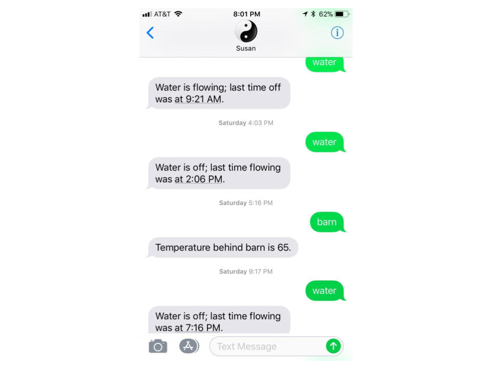
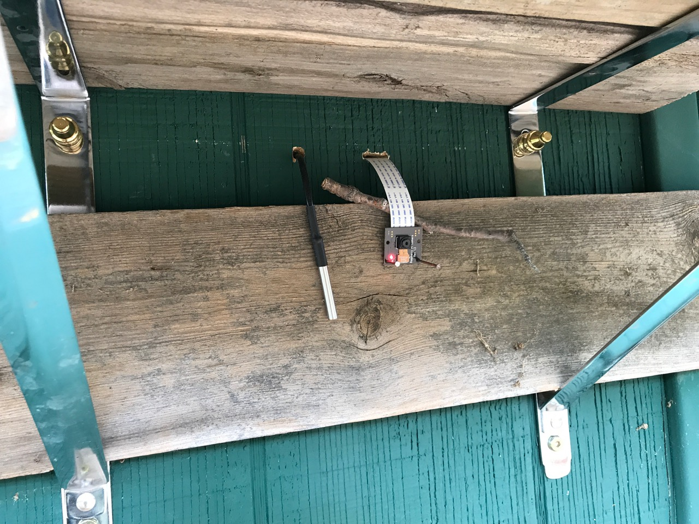

Software R & D
Yin Yang Ranch is evolving. New housing developments around us are changing the way the local wildlife lives and travels about. As see this happening, we want to observe and document it.
We are developing a network of cameras, sensors and software to track the local environment and its wildlife. Some of the cameras are commercial ones like Google Nest cameras that have infrared capability. Some of the cameras are self-built projects we put together using small Raspberry Pi computers and camera sensors.
PyCon 2020 Talk
All our Yin Yang Ranch software is written in a computer language called Python. Jeff Bass, lead software geek of Yin Yang Ranch, gave a talk about his open source software and its use in and around Yin Yang Ranch at the U.S. Python Software Conference PyCon 2020:
Jeff Bass - Yin Yang Ranch: Building a Distributed Computer Vision Pipeline using Python, OpenCV and ZMQ
Yin Yang Ranch Software
All the software and electronics we are developing is open source and described in this project
on GitHub: Yin Yang Ranch project overview.
There are links in that project repository to the source code of all our software
packages, including imageZMQ, imagenode and imagehub. There is a working
prototype of the librarian package in the overview repository.
The design of the software system is what is called a Distributed Computer Vision
Pipeline. The pipeline starts with 8-12 Raspberry Pi computer servers with attached
cameras at various places around the farm: watching the driveway, on the back of
the barn aimed at the creek, aimed at the grape arbor, watching the water meter
etc. These Raspberry Pi imagenodes capture images and select which images
meet "send them" criteria, which varies by the location and job of the specific
Raspberry Pi computer. These images are transmitted via our imageZMQ program
to the imagehub server in the house. Finally, a librarian program sorts
through the images and labels them and answers questions about them. Here is
a text message dialog with the librarian software bot (named "Susan"):

This is a design diagram of the overall Computer Vision Distributed Pipeline:

Raspberry Pi Computers
For those unfamiliar with them, Raspberry Pi computers are about the size of a credit card and use less power than a flashlight. Each one runs a full server version of Linux, the same operating system that runs most of the servers on the internet.
We use Raspberry Pi computers to operate cameras and sensors in multiple locations around Yin Yang Ranch. They are small enough that they can fit into light fixtures, security camera housings or a pint-sized glass mason jar.
Here is a Raspberry Pi computer and its Raspberry Pi Camera Module:

Here is a glass Mason jar holding a Raspberry Pi computer and Camera Module. It is positioned on our water meter cover watching the dial of the water meter. We can ask Susan, the Librarian Bot, if the water is running and get an answer in real time (see the text messages photo above):
Cameras and Sensors
We use cameras to track our urban wildlife. We use a variety cameras. Some are commercial cameras like Google Nest Cameras. Others are camera sensors we connect to small Raspberry Pi computers. We use a variety of enclosures for our hand-built cameras including some $5 Fake Security Cameras; we take them apart and put a Raspberry Pi computer with a PiCamera module into it.
Driveway Camera
We have a camera that watches our driveway. Has the mail come today? Have any Coyotes passed by?
Fake Security Camera For $5 on Amazon:
It holds a Raspberry Pi Computer and a PiCamera Module. And becomes a wildlife camera:

Here's what it looks like when we've taken the housing apart and put a Raspberry Pi computer and its PiCamera module into it:

Barn IR Camera & Temperature Sensor
We have a bare infrared PiNoir camera sensor on the back of the barn. It can't be behind glass because that blocks infrared light. So we put a few shingles over the infrared camera sensor to shade it from the rain. We added a temperature sensor and an infrared spotlight. The sensor and camera cables pass through holes in the barn wall to the Raspberry Pi computer inside the barn.
Here is a closeup photo of the PiNoir Camera module and the temperature sensor under their protective shingles:

Here's a view of them that shows the Infrared Flooglight. You can see the red light of the camera module under the shingles with the temperature sensor probe just to the left of it:

And here is an image this setup captured of a coyote behind the barn:

We have about a dozen cameras distributed around Yin Yang Ranch. We are writing software to manage the stream of images and perform image analysis to identify coyotes vs. bobcats. And we are working on computer vision software to distinguish individual animals based on their markings and their gait as they walk.